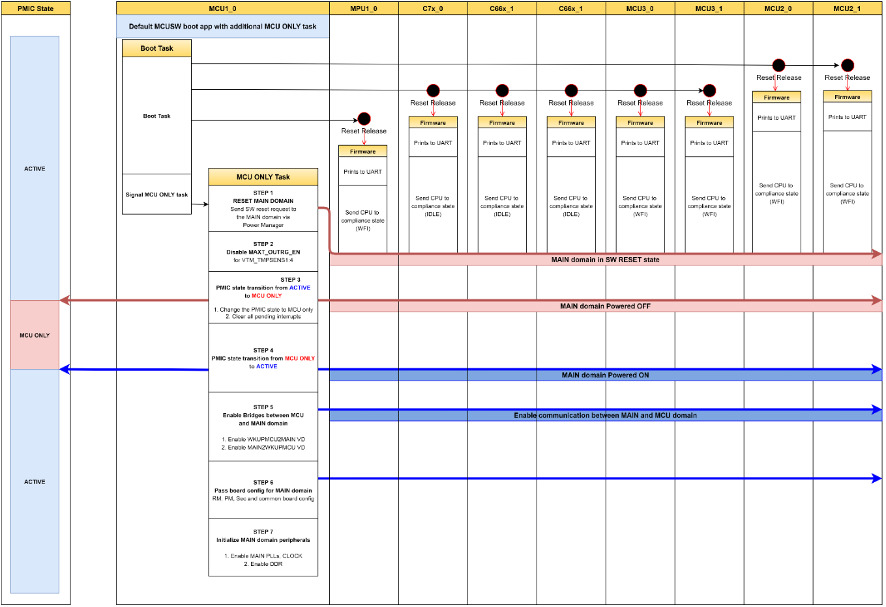
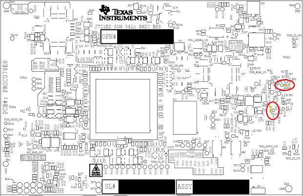

|
MCUSW
|
|
MCUSW
|
SoC's such as J721E/J7200, integrates a MicroController Unit Subsystem (MCU SS) as a chip-in-chip. It operates using a separate voltage supply, clock sources and resets and includes the components needed for device management. This allows the MCUSS to function continuously regardless of the state of the rest of the device.
This application demonstrates steps to switch mode from ACTIVE (full SoC powered ON) to MCU Only mode and then from MCU Only to ACTIVE mode on J721E EVM.
Table below lists acronyms for different modes of the device
| Mode | Comments |
|---|---|
| MCU Only | Power to main domain is turned OFF and no compute core/hardware accelerators can be used. MCU domain is functional |
| ACTIVE | Main and MCU domains are functional |
Table below list SoC on which this demo application is supported and tested
| SoC | Comments |
|---|---|
| J721E | Requires beta j721e evm with TPS6594-Q1 PMIC |
This application depends on multiple components and are detailed in sections below
Back To Top
The application MCU ONLY Task is hosted on MCU R5F and switches the SoC between ACTIVE and MCU ONLY modes.

Back To Top
This application is part of Boot App and is disabled by default and requires to be enabled.
Follow the instructions specified in Boot App - Build Instructions
Back To Top
J721E:
When operating in ACTIVE mode or MCU only mode, one could check power supply provided on different rails. The table below list different test-point/power rails that could be probed
| Mode | Test Point | Expected Voltage |
|---|---|---|
| ACTIVE | TP133 | 1.8v |
| ACTIVE | TP134 | 1.8v |
| MCU Only | TP133 | 1.8v |
| MCU Only | TP134 | 0.0v |

Back To Top
Below is the log from one of the test runs
``` Starting Sciserver..... PASSED
MCN Response App:NOTE : Operating in internal loop-bacCAN Response App:NOTE : Operating in internal loop-back mode CAN Response App:Message Id Received c00000c0 Message Length is 64 CAN Response App:Test completed for 0 instance
CAN Response App:NOTE : Operating in internal loop-back mode CAN Response App:Message Id Received c00000b0 Message Length is 64 C OSPI NOR device ID: 0x5b1a, manufacturer ID: 0x2c Length is 64 CAN Response App:Test completed for 1 instance
CAN Response App:Test completed for 1 instance
CAN Response App: 8192 bytes used for stack CAN Response App:Early CAN completed!!! Boot App: Started at 479 usec Boot App: Total Num booted cores = 8 Boot App: Booted Core ID #6 at 198915 usecs Boot App: Booted Core ID #7 at 199123 usecs Boot App: Booted Core ID #8 at 266195 usecs Boot App: Booted Core ID #9 at 266400 usecs Boot App: Booted Core ID #10 at 266594 usecs Boot App: Booted Core ID #11 at 266774 usecs Boot App: Booted Core ID #12 at 267433 usecs Boot App: Booted Core ID #0 at 296580 usecs
MCU Boot Task started at 478 usecs and finished at 4938455 usecs MCU only app: BootApp Task to completed! MCU only app: Inside MCU ONLY task! MCU only app: Disabling MAXT_OUTRG_EN for TMPSENS1:4 in MAIN domain! MCU only app: STATE INFO :: CURRENTLY IN ACTIVE MODE! MCU only app: LED LD5 should be ON MCU only app: Sleeping for 5s, please measure TP133 and TP134! MCU only app: Expected values in ACTIVE mode: TP133: HIGH TP134: HIGH MCU only app: ############################ACTIVE -> MCU ONLY MODE############################ MCU only app: Issueing a SW reset to the MAIN domain... MCU only app: PMIC STATE CHANGE: ACTIVE -> MCU ONLY... MCU only app: INT_TOP = 0xc MCU only app: INT_STARTUP = 0x2 MCU only app: INT_GPIO = 0xa MCU only app: INT_GPIO1_8 = 0xc8 MCU only app: Read FSM_NSLEEP_TRIGGERS = 0x0 MCU only app: Write FSM_NSLEEP_TRIGGERS = 0x2 MCU only app: Read FSM_NSLEEP_TRIGGERS = 0x2 MCU only app: Write INT_STARTUP = 0x2 MCU only app: INT_TOP = 0x4 MCU only app: Write INT_STARTUP = 0xc8 MCU only app: INT_GPIO = 0x2 MCU only app: INT_TOP = 0x4 MCU only app: Write INT_GPIO = 0x2 MCU only app: Final Read INT_TOP = 0x0 MCU only app: Final Read FSM_NSLEEP_TRIGGERS = 0x2 MCU only app: PMIC STATE CHANGE: ACTIVE -> MCU ONLY...Done MCU only app: #########################ACTIVE -> MCU ONLY MODE DONE########################## MCU only app: STATE INFO :: NOW IN MCU ONLY MODE! MCU only app: LED LD5 should be OFF MCU only app: Sleeping for 5s, please measure TP133 and TP134! MCU only app: Expected values in MCU ONLY mode: TP133: HIGH TP134: LOW MCU only app: ###########################MCU ONLY -> ACTIVE MODE############################ MCU only app: PMIC STATE CHANGE: MCU ONLY -> ACTIVE... MCU only app: INT_TOP = 0x0 MCU only app: Write CONFIG_1 = 0xc0 MCU only app: Write FSM_NSLEEP_TRIGGERS = 0x3 MCU only app: Write CONFIG_1 = 0x0 MCU only app: Read FSM_NSLEEP_TRIGGERS = 0x3 MCU only app: PMIC STATE CHANGE: MCU ONLY -> ACTIVE...Done MCU only app: Configure WKUPMCU2MAIN and MAIN2WKUPMCU Bridges... MCU only app: WKUPMCU2MAIN and MAIN2WKUPMCU Bridges configured successfully! MCU only app: Configuring Sciclient_board for MAIN domain MCU only app: Initiallizing MAIN PLLS... MCU only app: Initiallizing MAIN CLOCKS... MCU only app: Initiallizing DDR... MCU only app: Trying to access MAIN domain peripherals... MCU only app: Writing to DDR... MCU only app: Reading from DDR... MCU only app: Read value matches the value written for DDR! MCU only app: Writing to MSMC... MCU only app: Reading from MSMC... MCU only app: Read value matches the value written for MSMC! MCU only app: Reading MAIN MCAN0 Revision register... MCU only app: MAIN MCAN0 MCANSS_PID = 0x68e04901 MCU only app: ########################MCU ONLY -> ACTIVE MODE DONE########################## MCU only app: STATE INFO :: CURRENTLY IN ACTIVE MODE! MCU only app: LED LD5 should be ON MCU only app: Expected values in ACTIVE mode: TP133: HIGH TP134: HIGH MCU only app: Enterting an infinite loop... MCU only app: As the full chip is powered ON you can connect JTAG MCU only app: Connect CCS via JTAG at this point and access DDR, MSMC and other MAIN domain perepherals (eg - MCAN)!!
```
Back To Top
Back To Top
| Revision | Date | Author | Description | Status |
|---|---|---|---|---|
| 0.1 | 12 Jan 2021 | Sujith S | Initial Version | Approved |
 1.8.6
1.8.6